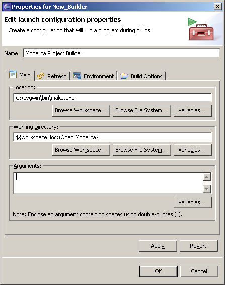
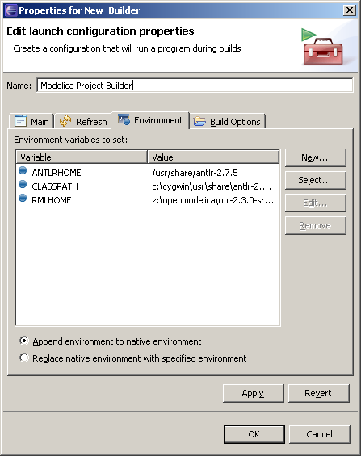
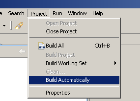

Building Modelica projects is not supported out of the box right now. However it is possible to instruct Eclipse to use an external program for building. This is done by creating a so called project builder.
To create a builder, right click a project and select Properties. Select the Builders option and then click New... Choose Program as configuration type. On the next screen, enter the path to the make binary in Location field. To select the Working Directory, click Browse Workspace... and select your project from the list.
If you're building OpenModelica you'll also need to set up some environment variables. Click on the Environment tab to view the current variables. To add a new variable, simply click New... The variables that are needed for building OpenModelica are ANTLRHOME, CLASSPATH and RMLHOME. Refer to the OpenModelica README file for details.
When you're finished, click OK and close the Properties dialog. Now you have to disable the automatic build feature by deselecting Build Automatically in the Project menu item.
Now you can build the project by selecting Build Project from the project context menu which you reach by right clicking on the project in the Modelica Projects view. Automatic incremental building of Modelica projects is not supported at this time, but stay tuned.